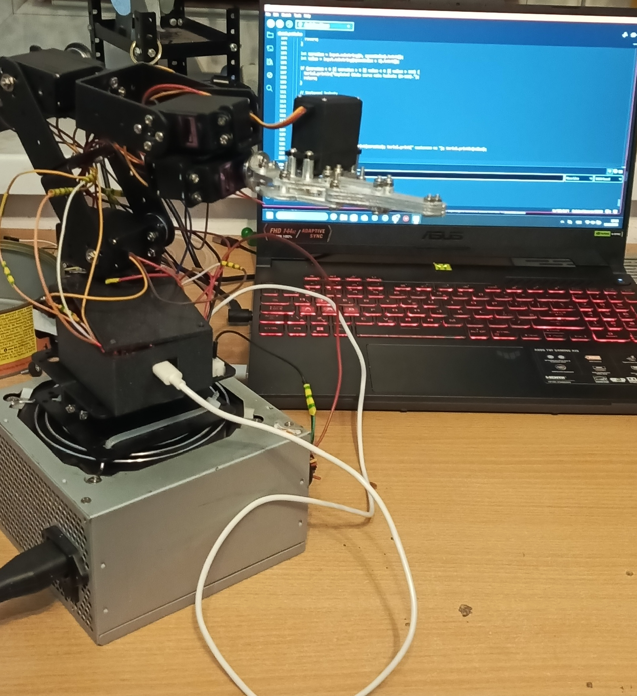

Šestiosé robotické rameno řízené Arduinem, PCA9685, joysticky a webem v Pythonu.

Tento projekt představuje robotické rameno řízené mikrokontrolérem Arduino za použití PWM ovladače PCA9685, displeje a dvousměrových joysticků.
Lze ovládat analogovými joysticky i přes webové rozhraní v Pythonu (pyserial).
Displej LCD 16x2 I2C zobrazuje aktuální úhly serv 1 až 5 v reálném čase.
Ukládání výchozích nebo uložených pozic v EEPROM mikrokontroléru.
| Komponenta | Popis / Specifikace | Odkaz |
|---|---|---|
| Arduino Nano/Every | Řídicí mikrokontrolér projektu | Koupit (Laskakit) |
| PCA9685 PWM Driver | 16kanálový 12bitový ovladač serv přes I2C | Koupit (Drátek) |
| LCD Displej 16x2 s I2C | Displej se síťovým modulem PCF8574 | Koupit (Laskakit) |
| 2x Analogový Joystick Module | Dvouosé joysticky s tlačítkem (např. KY-023) | Koupit (Drátek) |
| Servomotory (MG996R) | Serva s kovovými převody | Koupit (Drátek) |
| 6 osá Kovová robotická ruka | Konstrukce i se servomotory | Koupit (Laskakit) |
| Knihovna pro PCA9685 | Knihovna pro práci s PCA9685 | Stáhnout ZIP |
| Ovladač pro Arduino | Ovladač (CH34x) do PC pro práci s Arduinem | Stáhnout ZIP |
| Ovladač (STL) | STL soubory ovladače (víko a tělo je zvlášť) | Stáhnout ZIP |
Tento kód nahrajte do Arduina. Obsahuje podporu pro ovládání přes sériovou linku i přes fyzické joysticky.
Ovládání ramene z webu běží v Pythonu (Flask + pyserial) přímo na tvém počítači, protože GitHub Pages Python nespouští. Postup:
hotovy_kod.ino do Arduina a nech ho připojené přes USB.pip install -r requirements.txtpython app.pyOdkaz funguje jen tehdy, když je app.py spuštěný. Bez Arduina si můžeš ovládání vyzkoušet v režimu SIMULACE.